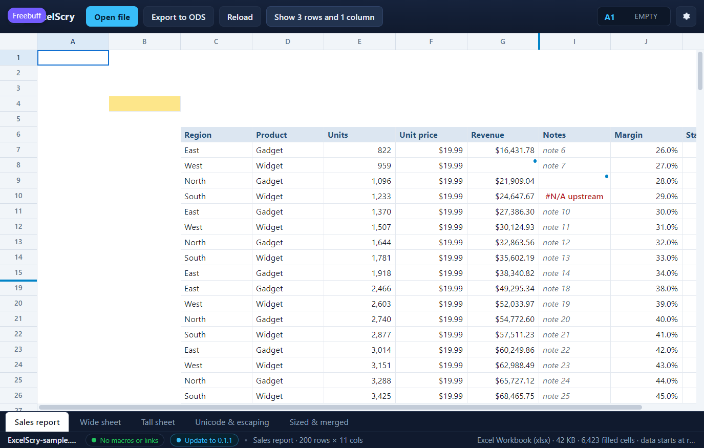
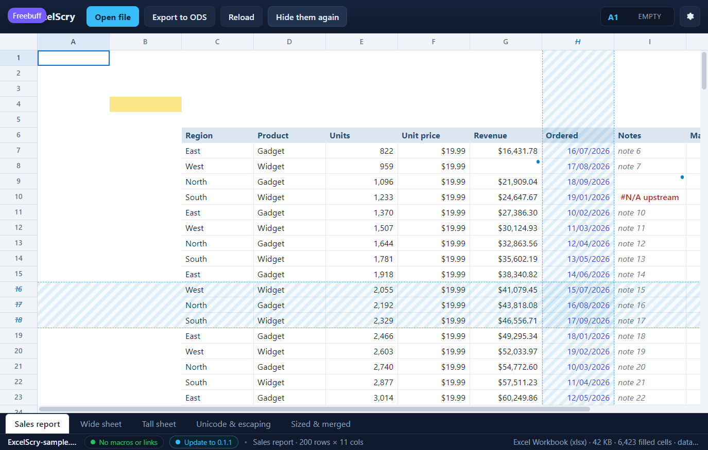

<!doctype html>
<meta charset="utf-8">
<title>ExcelScry — the rows and columns a sheet hides</title>
<style>
  body { margin: 0; background: #1b1d22; color: #c9cdd6;
         font: 14px/1.5 Segoe UI, system-ui, sans-serif; }
  figure { margin: 0 0 4px; }
  img { display: block; width: 100%; height: auto; }
  figcaption { padding: 12px 16px; }
  code { color: #8fd3ff; }
</style>
<figure>
  
  <figcaption>
    The sheet hides its column of order dates and three rows of detail, so the
    grid leaves them where the sheet left them: <code>H</code> is gone from the
    letter strip and the numbers run <code>15</code>, <code>19</code>. What
    remains of each hidden run is the seam it collapsed to — the blue bar in
    the strip, whose tooltip counts what is behind it and whose click brings it
    back — and the toolbar offers the whole sheet at once:
    <em>Show 3 rows and 1 column</em>. (Shown in the UI harness, whose mock
    sheet carries the runs the Rust side sends.)
  </figcaption>
</figure>
<figure>
  
  <figcaption>
    Revealed, the same rows and column are laid out where they belong, washed
    with a stripe and with their number or letter struck through: showing them
    is a view, not an edit, and they are still hidden in the file. Selecting
    them works as it does anywhere else — the readout names <code>H7</code>,
    the grid selects the cell — while collapsing them again puts the seams
    back. Arrow keys and the pointer step over a collapsed run in the direction
    they are travelling, so the selection never lands on a row that is not on
    screen.
  </figcaption>
</figure>
